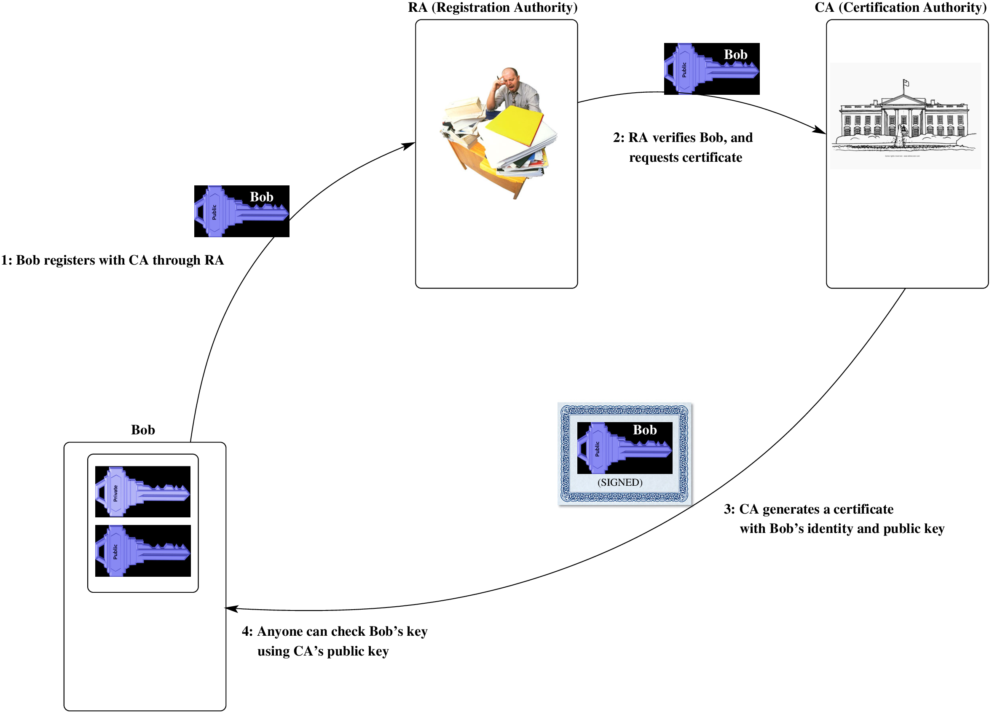
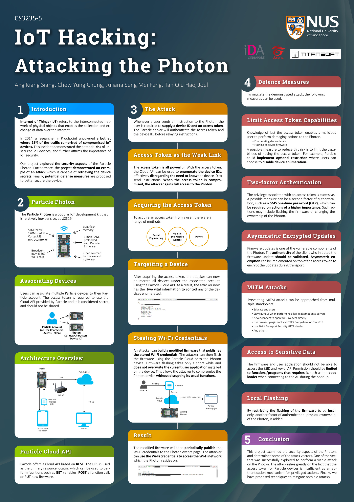
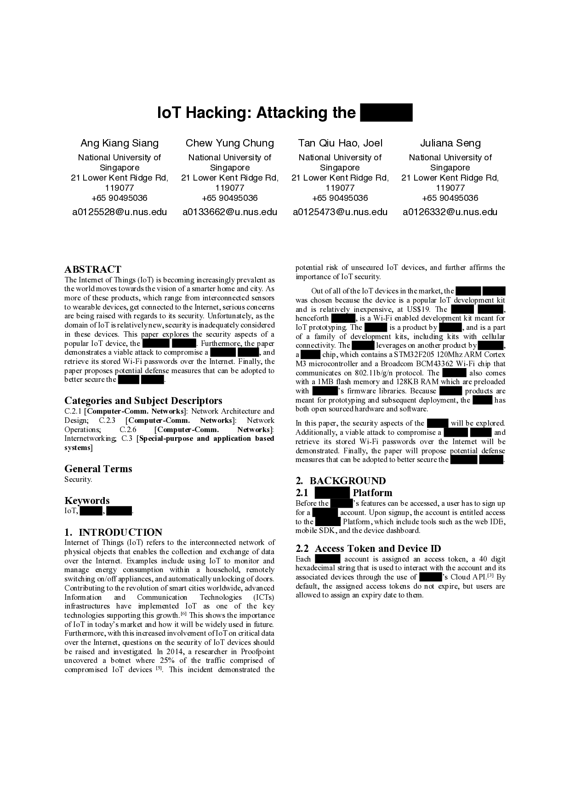

DADA2026:8
Defence against the Dark Arts
Eighth topic - Infrastructure
July, 2026
Building better support systems

Case study 1: SWIFT [i2,i6]

For 20 years it ran well without any external fraud. Since 1996 SWIFT has used PK cryptography.
Most frauds have an insider bypassing a dual control. Stanley Rifkin, a computer consultant, got hold of an authorization code, and used this to authorize a transfer of $10M worth of diamonds.
In February 2016, attackers tried to steal US$951 Million from Bangladesh Bank, the central bank of Bangladesh, using the SWIFT network. They succeeded in getting $81M. The attack involved long term study and infiltration of the bank head office, multiple “runners” in multiple countries, and a significant effort.
Case study 2: Man-in-the-middle for Public Keys

We see that a man-in-the-middle can return a bad (public) key to Alice, who incorrectly assumes it is from Bob. From then on she encrypts using a key that Harry made, and who also has the matching secret key.
Case study 2: The certification mechanism


Your organisation communicates with the RA (Registration Authority), passes them a public key, and convinces them that they are the rightful owners of the domain or web site. Once the RA is convinced, it gets the CA (Certifying authority) to digitally sign the public key with the name/ID, binding them together in a “certificate”. This is passed back to the organisation.
Case study 2: A padding attack on RSA [ctrl-i7]

In 1998, Daniel Bleichenbacher from Bell labs published a padding oracle attack on PKCS#1 (and hence SSL V3.0). The attack is based on the fact that RSA is homomorphic with respect to multiplication. In addition, some (web) servers can act as padding oracles.
In SSL/TLS, during the initial negotiation, critical keys are sent, encrypted using RSA. A padding oracle attack can retrieve this "pre"master secret key, in what has been called the “million message” attack. The details of this attack are found in the paper, but it is not dissimilar to the padding oracle attack in Lab2; multiple messages are sent to the server, which responds differently if the format of the padding is correct or incorrect.
The approach taken to fix this was to ask vendors to add extra countermeasures: primarily returning uninformative server responses.
Case study 3: Weak DH [X]

... and in them we discover that NSA has been routinely listening in on skype calls, and intercepting IPsec and https:// conversations.
My colleague Martin suggests that, in this day and age, most people couldn’t care less. Maybe he is right. But in any case, how can it be done?
In October 2015, a plausible explanation was revealed (see [X] above).
Case study 3: large scale monitoring of IPSec

Notice the diagram is clearly indicating the IKE (Internet Key Exchange), and the use of IPsec - the AH and ESP packets.
There is so much supporting material, that it is clear that this is not FUD, but is a real mechanism, in use since at least 2009.
It relies on the use of the fixed large primes used in Diffie-Hellman key exchange software.
Case study 3: large scale monitoring of IPSec
Initially, the Diffie-Hellman key exchange is downgraded to one using smaller (EXPORT-GRADE) bitsize primes. The IKE (Internet Key Exchange) values are sent to a supercomputer, which returns actual keys within 15 minutes. On a modern computer/PC? About 30 seconds.
Common (NFS) algorithm can use pre-computation, for a specific prime, of 3 out of the 4 steps:

On the Browser, you must check you have the updates which stop *you* being vulnerable. On the Server you must Disable Export Cipher Suites, use (Ephemeral) Elliptic-Curve Diffie-Hellman (ECDHE) and use a Strong, Diffie Hellman Group (2048-bit or stronger).
Case study 4: The DNS

Forms a tree, and a new request at a leaf has to traverse the tree. A distributed database, with distributed caching of recent name requests. The distributed nature of the DNS provides plenty of opportunity to inject in false entries.
There are various approaches to harden the DNS.
Challenge response [1]

Kerberos/Cerberus
 |
What is it?
Kerberos is a network authentication protocol. It provides strong authentication for client/server applications using symmetric or public key cryptography. Kerberos is freely available in source form, and also is in commercial products (Windows uses Kerberos for login).
Authentication... and encryption.
Client and server prove their identity, and encrypt all of their communications. There is a Key Distribution Center (KDC). Kerberos uses a Needham-Schroeder symmetric key protocol. |
Kerberos

When a client first authenticates to Kerberos, she:
- Talks to KDC, to get a Ticket Granting Ticket .
- Uses that to talk to the Ticket Granting Service and get a particular ticket for a particular service.
- Uses that ticket, to interact with the server.
This way a user doesn’t have to reenter passwords every time they wish to connect.
Note that if the Ticket Granting Ticket is compromised, an attacker can only masquerade as a user until the ticket expires.
IoT [i4]


Only a single token is needed to access remote units via a cloud API. This turns out to be a weakness.
IoT

An attack on IoT and photons, with responsible disclosure



And they were talking to the manufacturers to come up with a resolution. They helped with mitigations to limit the access token capabilities, use two factor authentication, and more carefully authenticate the clients who initiate software updates...
The firmware stole WiFi credentials for the remote network near the photon.